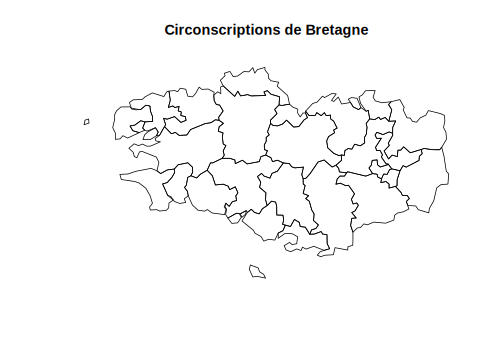
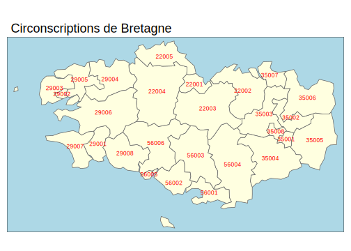
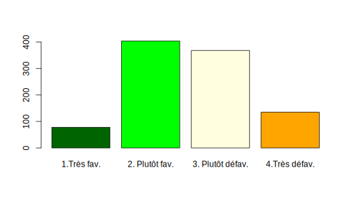
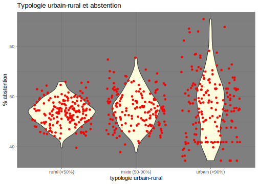
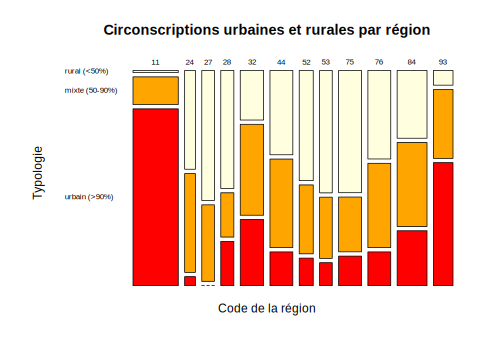

Partie 10 Graphiques : applications
- Mise en place : Télécharger le dossier exo_dvf et décompressez le sur votre ordinateur. Puis ouvrez le projet R
exo.Rprojdans Rstudio.
10.2 préparation des données
10.2.1 Chargement du fichier
On charge un fichier sauvegardé au format .RDS appelé dvfclean_V2.RDS
don<-readRDS("resources/data/dvf/data/dvfclean_V2.RDS")
head(don)## id ann code nom type surf nbp prix prixm2
## 1 2019-1425669 2019 93046 Livry-Gargan Appartement 58 3 271000 4672.414
## 2 2019-1425771 2019 93046 Livry-Gargan Appartement 38 2 149000 3921.053
## 3 2019-1425824 2019 93078 Villepinte Appartement 77 5 205000 2662.338
## 4 2019-1426009 2019 93071 Sevran Appartement 102 4 158000 1549.020
## 5 2019-1426069 2019 93071 Sevran Appartement 20 1 100680 5034.000
## 6 2019-1426161 2019 93007 Le Blanc-Mesnil Appartement 45 2 219000 4866.667
## dep
## 1 93
## 2 93
## 3 93
## 4 93
## 5 93
## 6 9310.2.2 Contenu du fichier
Ce dossier est une version simplifiée des Demandes de Valeurs Foncières et contient un échantillon des ventes de maisons ou d’appartements effectués dans les départements de Paris et Petite Couronne au cours des années 2014 à 2021. On n’a retenu que les ventes simples correspondant à une seule maison ou à un seul appartement.
Sources : Ces données sont disponibles sur le site opendatasoft sous l’appellation “Demandes de valeurs foncières géoloalisées”
10.2.3 Dictionaire des variables
- id : identifiant de la transaction
- ann : année de la transcation
- code : code INSEE de la commune où a eu lieu la transaction
- nom : code de la commune où a eu lieu la transaction
- type : type de bien vendu (maison ou appartement)
- surf : surface habitable du logement
- nbp : nombre de pièces du logement
- prix : prix de vente du bien
- prixm2 : prix de vente au m2 (déduit de prix et surf)
- dep : département de vente du bien (déduit de code)
10.2.4 Type des variables
On passe la variable dep en factor et on change le nom des labels. Puis on crée une autre variable opposant Paris et la petite couronne
don$dep<-as.factor(don$dep)
levels(don$dep) <- c("Paris","Hauts-de-Seine","Seine-Saint-Denis","Val-de-Marne")
don$loc <-don$dep
levels(don$loc) <- c("Paris","PC","PC","PC")10.2.5 Résumé de l’ensemble du tableau
summary(don)## id ann code nom
## Length:301011 Length:301011 Length:301011 Length:301011
## Class :character Class :character Class :character Class :character
## Mode :character Mode :character Mode :character Mode :character
##
##
##
## type surf nbp prix
## Appartement:290394 Min. : 10.00 Min. :0.000 Min. : 400
## Maison : 10617 1st Qu.: 29.00 1st Qu.:1.000 1st Qu.: 175000
## Median : 45.00 Median :2.000 Median : 265000
## Mean : 49.47 Mean :2.357 Mean : 453790
## 3rd Qu.: 65.00 3rd Qu.:3.000 3rd Qu.: 425000
## Max. :159.00 Max. :6.000 Max. :21141232
## prixm2 dep loc
## Min. : 35.83 Paris :121919 Paris:121919
## 1st Qu.: 4279.48 Hauts-de-Seine : 66444 PC :179092
## Median : 6578.95 Seine-Saint-Denis: 58114
## Mean : 9792.01 Val-de-Marne : 54534
## 3rd Qu.: 9651.16
## Max. :197852.7110.3 Principes généraux
On commence par charger le package ggplot2 qui est une partie de l’univers tidyverse mais que l’on peut utiliser indépendamment du reste de l’empire d’Hadley Wickham…
library(ggplot2)10.3.1 Les différentes étapes
- la commande ggplot(data) initie la création du graphique.
- la commande aes() qui est l’abrévation de aesthetics définit les paramètres généraux de l’ensemble du graphique et comporte en général
- x = variable liée à l’axe horizontal
- y= variable liée à l’axe vertical
- colour= : variable définissant des groupes / couleur
- shape= : variable définissant des groupes / forme
- la commande geom_xxx crée un graphique de type xxx
- les commandes additionnelles scale_xxx précisent les axes
- la commande additionelle facet_xxx partitionne la figure en plusieurs
- la commande theme_xxx retouche l’ensemble des paramètres de couleur, police, épaisseur
N.B. Toutes les étapes ci-dessus ne sont pas obligatoires.

10.3.3 La construction pas à pas
On définit le tableau de données avec ggplot() et les variables principales avec aes()
ggplot(sel) +
aes(x = surf) +
aes(y = prix) +
aes(col = type)
On ajoute le type principal du graphique avec la commande geom_point()
ggplot(sel) +
aes(x = surf) +
aes(y = prix) +
geom_point() 
On retouche les axes horizontaux et verticaux en les passant en logarithme et en leur donnant un titre.
ggplot(sel) +
aes(x = surf) +
aes(y = prix) +
geom_point() +
scale_x_log10(name="Surface du logement")+
scale_y_log10(name="Prix de vente")
On segmente le graphique en facettes selon une ou plusieurs variables avec facet_wrap(). Du coup, on retire ces variables de l’esthétique générale :
ggplot(sel) +
aes(x = surf) +
aes(y = prix) +
geom_point() +
scale_x_log10(name="Surface du logement")+
scale_y_log10(name="Prix de vente")+
facet_wrap(vars(type),ncol= 2)
On ajoute dans chaque facette une droite de tendance et son intervalle de confiance avec geom_smooth(). On précise method=“lm” pour avoir une droite et non pas une courbe
ggplot(sel) +
aes(x = surf) +
aes(y = prix) +
geom_point() +
scale_x_log10(name="Surface du logement")+
scale_y_log10(name="Prix de vente")+
facet_wrap(vars(type),ncol= 2)+
geom_smooth(method="lm") 
Onajoute un titre principal avec ggtitle() et on retouche l’ensemble de l’apparence avec theme_light().
ggplot(sel) +
aes(x = surf) +
aes(y = prix) +
geom_point() +
scale_x_log10(name="Surface du logement")+
scale_y_log10(name="Prix de vente")+
facet_wrap(vars(type),ncol= 2)+
geom_smooth(method="lm") +
ggtitle(label = "Relation entre prix et surface des logements",
subtitle = "Source : DVF ") +
theme_light()
10.3.4 Comparaison avec R-Base
La principale différence réside dans la construction séquentielle de la figure avec l’opérateur +. A tout moment on peut sauvegarder la figure au cours d’une des étapes décrites dans l’exemple. On parle de pipeline pour ce type de programme que l’on retrouve dans la manipulation de données avec tidyverse et dplyr.
La seconde différence réside dans la production rapide d’une figure de qualité graphique acceptable sans avoir besoin de spécifier les paramètres par() de R-Base.
Au total, ggplot2 s’impose actuellement comme un standard mondial autour duquel se greffent d’autres applications. Par exemple, on peut rendre interactif un graphique ggplot() en le couplant avec plotly().
Mais … ggplot2 est beaucoup moins simple qu’il n’y paraît de prime abord. Et on peut facilement s’arracher les cheveux sur certaines commandes !
10.3.5 Attention ! Paramètres aes() locaux et globaux
Une des plus grandes difficultés que l’on rencontre dans ggplot() est la manipulation du paramètre aes() qui peut renvoyer :
- soit à des paramètres globaux s’ils apparaissent dans le ggplot initial ou dans des lignes de codes isolées
- soit à des paramètres locaux, s’ils apparaissent à l’intérieur d’une fonction geom().
Deux exemples rapides pour bien comprendre
- type est un paramètre global : dans ce cas il s’applique à toutes les commandes qui suivent. Il y aura donc deux droites de régression générées par geom_smooth
ggplot(sel, aes(x = surf, y = prix, color = type)) +
geom_point() +
geom_smooth(method="lm")
- type est un paramètre local de geom_point() : dans ce cas il n’aura pas d’effet sur geom_smooth() qui va générer une seule droite de régression.
ggplot(sel, aes(x = surf, y = prix)) +
geom_point(aes(color=type)) +
geom_smooth(method="lm")
10.4 X discrète
10.5 X quantitative continue
10.5.1 hist (R-base)
sel2<-sel[sel$type=="Maison",]
hist(sel2$prix,breaks = 15,
col = "lightyellow",
border = "blue",
xlab="Prix de vente",
ylab = "Nombre de ventes",
main = "Ventes de maison à Sucy en Brie (2014-2021")
10.5.2 geom_histogram (ggplot2)
# On démarre par une ligne de tidyverse ...
sel %>% filter(type=="Maison") %>%
# ... en on embraye sur ggplot2
ggplot() +
aes(x =prix) +
# Appel de la fonction principale
geom_histogram( bins = 15,
fill="lightyellow",
col="blue"
) +
# Retouche de l'échelle
scale_x_continuous( name = "Prix de vente") +
scale_y_continuous(name = "Nombre de ventes")+
# Ajout du titre
ggtitle("Ventes de maison à Sucy-en-Brie (2014-2021)") 
10.6 X et Y quantitatives continues
10.6.1 plot (R-base)
plot(x = sel$surf,
y = sel$prix,
cex=0,
xlab="Surface",
ylab="Prix de vente",
main= "Ventes de maison à Sucy-en-Brie (2014-2021)")
points(x = sel$surf,
y = sel$prix,
col=sel$type,
cex=sqrt(sel$nbp),
pch=19)
abline(lm(sel$prix~sel$surf),
col="blue",
lwd=3)
10.6.2 geom_point (ggplot2)
# On définit les paramètres globaux
ggplot(sel, aes(x =surf, y=prix)) +
# On trace les points avec
# des paramètres locaux
geom_point(aes(color=type,
size = nbp)) +
# On ajoute la droite de régression
geom_smooth(method = "lm") +
# On ajoute les titres
scale_x_continuous(name="surface") +
scale_y_continuous(name="prix de vente") +
ggtitle("Ventes de maison à Sucy-en-Brie (2014-2021)")
10.7 X quantitative continue et Y discrète
10.7.1 6.1 boxplot (R-base)
sel2<-sel[(don$type=="Maison"),]
sel2$SIZE<-as.factor(sel2$nbp)
#levels(don2$SIZE)<-c("1 ou 2", "1 ou 2", "3 ou 4", "3 ou 4", "5 ou 6", "5 ou 6")
boxplot(sel2$prix~sel2$SIZE,
col=rainbow(n=12, alpha=0.5),
xlab="Nombre de pièces",
ylab="Prix",
main= "Ventes de maison à Sucy-en-Brie (2014-2021)")
10.7.2 geom_boxplot (ggplot2)
# On filtre le tableau et on change SIZE en factor
sel %>% filter(type=="Maison") %>%
mutate(SIZE = as.factor(nbp)) %>%
# On définit les paramètres principaux
ggplot(aes(x= SIZE,y = prix)) +
# On ajoute la boxplot
geom_boxplot(aes(fill= SIZE)) +
# On ajoute les titres
scale_x_discrete(name="Nombre de pièces") +
scale_y_continuous(name="Prix de vente") +
ggtitle("Ventes de maison à Sucy-en-Brie (2014-2021)")
10.7.3 beanplot (R-base + package beanplot)
par(bg="black",fg="white",col.lab ="white", col.axis ="white",col.main="white" )
sel2<-sel[(don$type=="Maison"),]
sel2$SIZE<-as.factor(sel2$nbp)
#levels(don2$SIZE)<-c("1 ou 2", "1 ou 2", "3 ou 4", "3 ou 4", "5 ou 6", "5 ou 6")
library(beanplot)
beanplot(sel2$prix~sel2$SIZE,
col=c("lightyellow","red"),
xlab="Nombre de pièces",
ylab="Prix",
main= "Ventes de maison à Sucy-en-Brie (2014-2021)")
10.7.4 geom_violin (ggplot2)
# On filtre le tableau et on change SIZE en factor
sel %>% filter(type=="Maison") %>%
mutate(SIZE = as.factor(nbp)) %>%
# On définit les paramètres principaux
ggplot(aes(x= SIZE,y = prix)) +
# On ajoute la géométrie
geom_violin(aes(fill= SIZE)) +
# On ajoute les titres
scale_x_discrete(name="Nombre de pièces") +
scale_y_continuous(name="Prix de vente") +
ggtitle("Ventes de maison à Sucy-en-Brie (2014-2021)") +
# On passe en thème "dark"
theme_dark()
10.8 Deux variables X et Y discrètes


10.9 Conclusion
10.9.1 R-base
- simple d’utilisation
- peut être amélioré par des packages spécialisés
- permet de créer ses propres fonctions
- n’impose pas d’apprendre tidyverse
10.9.2 ggplot2
- standard mondial du graphisme … actuellement
- compatible avec la religion du tidyverse
- rédaction séquentielle très efficace
- mais apprentissage difficile (plusieurs semaines …)